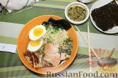

Корейская кухня
Корейская кухня
Кимчи Рамен

Для любителей азиатской кухни предлагаем приготовить этот интересный азиатский суп "Кимчи Рамен". Для его приготовления потребуется несколько больше времени, чем для приготовления классических, знакомых нам супов, но результат непременно вас порадует.
Яичный ролл
Хотите сделать на завтрак что-то новое и необычное? Тогда попробуйте яичный ролл по-корейски. Такой завтрак можно есть каждый день, меняя начинку, – всегда будет индивидуально и вкусно! Тем более готовить это блюдо из яиц достаточно просто, и набор продуктов